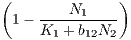

(a) |

(b) |
Figure 1: (a) Lynx and hare in action. (b) Number of pelts recorded over time.
Problem sheet 4
| Thomas E. Woolley |
| Last edited on: |
December 18, 2017
Data on the number of Canadian lynx and snowshoe hair pelts traded where collected by the Hudson Bay trading company1 . The data are presented in Figure 1(b) and has been used as a proxy for population data.
In this question we consider a mathematical model that has been suggested to describe the features seen in the data. Specifically, it is a predator-prey interaction model called the Lotka-Volterra model. Let L be the lynx population and H be the hare population. The interaction equations are
|
| (1) |
| = u - uv, | (2) | |
| = α(uv - v), | (3) |
where the time derivative is with respect to some non-dimensionalised time.
Provide the dimensional scales of the population (i.e. [L], [H] and [t]) as well as the definition of α. Note, that you are not required to show that [L] and [H] have the right dimension and α is dimensionless, but it is a good way to check your working.
|
| (4) |
Show that equation (4) can be directly integrated to show that the populations must satisfy the constraint
|
| (5) |
where C is a constant of integration that depends on the initial conditions. (Hint: rearrange du∕ dv such that one side contains all u terms and the other contains all v terms).
Let α = 1∕2 and simulate equations (2) and (3). Plot the results in the (u,v) plane along with equation (5). Note you will have to choose appropriate initial conditions, specify C in terms of these initial conditions and use an implicit plotting algorithm such as fimplicit in MatLab.
Consider the following set of equations which model the interactions of two populations N1 and N2:
| Ṅ1 | = r1N1, | (6) |
| Ṅ2 | = r2N2 . . | (7) |
Hint 1: by the symmetry of N1 and N2 in the equations whatever N1 is doing to N2, N2 is doing to N1. This means that the dynamics could be mutual creation (mutualism) or mutual destruction (competition).
Hint 2: Compare the above equations to regular logistic curve = ru(1 - u∕K). What happens if we increase or decrease K? Thus, what influence does increasing or decreasing N1 have on N2?
|
| (8) |
where
|
| (9) |
What restrictions (if any) do we need to place of the steady states?
One of the assumptions in the Lotka-Volterra equation is that the predation effect is proportional to both the predator and prey population. However, as the number of prey increases the competition between predators will increase, thus, we consider the adapted equations
| = u - uv, | (10) | |
 = b(uv - v) - bv2. = b(uv - v) - bv2. | (11) |
In 1963, Edward Lorenz developed a simplified mathematical model for atmospheric convection. The model is a system of three ordinary differential equations now known as the Lorenz equations:
| ẋ | = σ(y - x), | (12) |
| ẏ | = x(ρ - z) - y, | (13) |
| ż | = xy - βz. | (14) |
The equations relate the properties of a two-dimensional fluid layer uniformly warmed from below and cooled from above. In particular, the equations describe the rate of change of three quantities with respect to time: x is proportional to the rate of convection; y is proportional to the horizontal temperature variation; z is proportional to the vertical temperature variation. The constants σ, ρ, and β are system parameters proportional to the Prandtl number, Rayleigh number, and certain physical dimensions of the layer itself.
For simplicity, let σ = β = 1.
EXTENSION 1: If you are brave enough calculate the eigenvalues corresponding to the non-zero steady states and show that they always have negative real part when ρ > 1, but they may be complex.
EXTENSION 2: If you are even braver rerun the analysis with variables σ = 10, ρ = 28 and β = 3. This causes the system to act chaotically. Categorise the steady states in this case. What happens? An image of the chaotic trajectory can be seen in Figure 3.

(a)
ρ =
0.5 |

(b)
ρ =
2 |

(a) |

(b) |